Diagram Builder application allows the user to create new diagrams and also modify the existing ones. This application has *.edd extension. The user can use this diagram in their applications.
The main difference between the diagram builder and symbol palette is as follows:
· In Diagram Builder, user creates diagram documents
· In Symbol Designer, user creates palettes.
Software Path
..\..\Syncfusion\Essential Studio\<Version Number>\utilities\Diagram\DiagramBuilder
1. Overview Control
Overview Control provides a perspective view of a diagram model, and allows users to dynamically pan and zoom the diagrams. The control features a view port window that can be moved and / or resized using the mouse to modify the diagrams' origin and magnification properties at run-time. The properties of this control is discussed in the Overview Control topic.
2. Palette GroupBar and GroupView
The PaletteGroupBar control provides a way for users to drag and drop symbols onto a diagram. It is based on the Syncfusion Essential Tools GroupBar control. Each symbol palette loaded in the PaletteGroupBar occupies a panel that can be selected by a bar button. The bar button is labeled with the name of the symbol palette. The symbols in the palette are shown as icons that can be dragged and dropped onto the diagram. This control allows users to add symbols to a palette, and save or load the palette whenever necessary. It provides a way to classify and maintain symbols.
The PaletteGroupView control provides an easy way to serialize a symbol palette to and from the resource file of a form. At design-time, users can attach a symbol palette to a PaletteGroupView control in the form. Selecting the PaletteGroupView and clicking the Palette property in the Visual Studio .NET Properties window will open a standard Open File dialog, which allows the user to select a symbol palette file that has been created with the Symbol Designer.
For more details about these diagram controls, refer to the Palette GroupBar and GroupView topic.
3. Property Editor
The Property Editor in Essential Diagram displays properties of the currently selected object(s) in the diagram. It is a Windows Forms control that can be added to the Visual Studio .NET Toolbox. It also allows users to set or modify various properties of the objects or the model. The Property Editor provides an easy interface to set and view the various property settings. To know about the control's properties see Property Editor topic.
4. Document Explorer
Document Explorer allows you to visualize the details of the various objects that are added onto the diagram control at run-time. The layers will be listed under the Layers node and other objects like shapes, links, lines and text editor will be listed under Nodes node.
5. Diagram Document
The DiagramDocument is a serializable document type that encapsulates the model and view data for the diagram. The grid area of the diagram document is the diagram view object area. The nodes dragged from the PaletteGroupBar will be dropped here.
For more details, see Diagram Grid topic.
Diagram Builder Functionalities
1. How to Open an Existing Diagram Document
Follow the below steps in order to open an existing diagram document
1. Add OpenFileDialog control to the Form.
2. Set the Filter property of OpenFileDialog as Essential Diagram Palettes|*.edp|Visio Stencils|*.vss; *.vsx|Visio Drawings(Shapes only)|*.vsd; *.vdx|All files|*.*.
3. Add the below code snippet in your button click event.
|
[C#]
// Checking whether "OK" button is clicked in OpenFileDialog if (this.openFileDialog1.ShowDialog(this) == DialogResult.OK) { string FileName = this.openFileDialog1.FileName; this.diagram1.LoadBinary(FileName); this.diagram1.Refresh(); } |
The diagram1.LoadBinary() method loads the selected diagram file into diagram document.
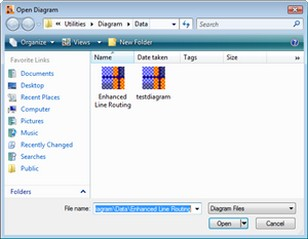
Figure 6: Diagram Open Dialog Box
2. How to Save a Diagram Document
Below are the steps to save a diagram document.
1. Add SaveFileDialog control to the Form.
2. Set the Filter property of SaveFileDialog as Essential Diagram Files|*.edd|All files|*.*.
3. Add the following code snippet in your button click event.
|
[C#]
// Checking whether "OK" button is clicked in SaveFileDialog if (this.saveFileDialog1.ShowDialog(this) == DialogResult.OK) { this.FileName = this.saveFileDialog1.FileName; this.diagram1.SaveBinary(this.FileName); } |
The diagram1.SaveBinary() method saves the diagram file in the given filename.
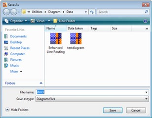
Figure 7: Diagram Save Dialog Box
3. How to print a Diagram Document
Following are the steps to print a diagram document:
1. Page Setup
The Page Setup dialog modifies the Page Settings and Printer Settings information for a given document. The user can enable sections of the dialog to manipulate printing, margins, paper orientation, size, source and to show help and network buttons. MinMargins defines the minimum margins a user can select.
The following code snippet can be used for setting the page set up for diagram document.
|
[C#]
if (diagram1 == null || diagram1.Model == null) return; using (PageSetupDialog dlgPageSetup = new PageSetupDialog(diagram1.View)) { if (dlgPageSetup.ShowDialog() == DialogResult.OK) { diagram1.UpdateView(); } } |
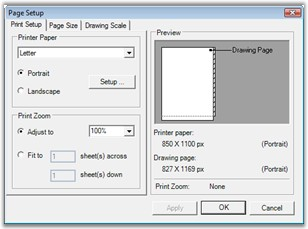
Figure 8: Diagram page Setup Dialog Box
2. Page Borders
The Page Borders dialog provides an interactive form-based interface, for setting the page borders of a diagram, initializing the dialog's Syncfusion.Windows.Forms.Diagram.PageBorderDialog. The PageBorderStyle property with the corresponding Syncfusion.Windows.Forms.Diagram.View.PageBorderStyle member of the diagram's view, will let the users to configure the page border settings using the dialog controls.
The following code snippet can be used for setting the page border for diagram document.
|
[C#]
if (diagram1 != null && diagram1.Model != null) { PageBorderDialog borderDialog = new PageBorderDialog(); borderDialog.PageBorderStyle = diagram1.View.PageBorderStyle; // It will show existing border set up if (borderDialog.ShowDialog() == DialogResult.OK) { diagram1.View.PageBorderStyle = borderDialog.PageBorderStyle; // It will update the modified set up. diagram1.View.RefreshPageSettings(); diagram1.UpdateView(); } } |
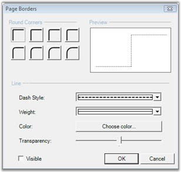
Figure 9: Diagram Page Borders Dialog Box
3. Header and Footers
The Header and Footer dialog provides an interactive form-based interface for initializing the Header and Footer settings of a diagram.
The following code snippet can be used for creating the Header and Footer dialog.
|
[C#]
if (diagram1 != null && diagram1.Model != null) { HeaderFooterDialog dlgHF = new HeaderFooterDialog(); dlgHF.Header = diagram1.Model.HeaderFooterData.Header; dlgHF.Footer = diagram1.Model.HeaderFooterData.Footer; dlgHF.MeasurementUnits = diagram1.Model.MeasurementUnits; if (dlgHF.ShowDialog() == DialogResult.OK) { diagram1.Model.HeaderFooterData.Header = dlgHF.Header; diagram1.Model.HeaderFooterData.Footer = dlgHF.Footer; } } |
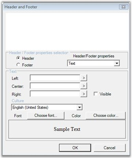
Figure 10: Diagram Header Footer Dialog Box
4. Print Preview
It will show a preview of the page which will appear when printed. The Print Preview dialog shows the preview of the page with the following:
· Page setup
· Page border set up
· Header and footers in the page
The following code snippet can be used for creating Print Preview dialog.
|
[C#]
if (diagram1 != null) { PrintDocument printDoc = diagram1.CreatePrintDocument(); PrintPreviewDialog printPreviewDlg = new PrintPreviewDialog(); printPreviewDlg.StartPosition = FormStartPosition.CenterScreen;
printDoc.PrinterSettings.FromPage = 0; printDoc.PrinterSettings.ToPage = 0; printDoc.PrinterSettings.PrintRange = PrintRange.AllPages;
printPreviewDlg.Document = printDoc; printPreviewDlg.ShowDialog(this); } |
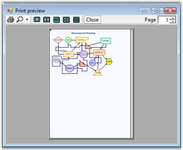
Figure 11: Print Preview Dialog Box
5. Print
This option will send the diagram document to the printer.
The following code snippet can be used for sending the document for printing.
|
[C#]
if (diagram1 != null) { PrintDocument printDoc = diagram1.CreatePrintDocument(); PrintDialog printDlg = new PrintDialog(); printDlg.Document = printDoc;
printDlg.AllowSomePages = true;
if (printDlg.ShowDialog(this) == DialogResult.OK) { printDoc.PrinterSettings = printDlg.PrinterSettings; printDoc.Print(); } } |
Diagram Builder Tools
Editing Options
|
Edit Menu Items |
Description |
Code Snippet |
|
Undo |
Reverts the latest modification done. |
Diagram1.Model.HistoryManager.Undo(); |
|
Redo |
Steps forward to operation history records and redoes the last undone task. |
Diagram1.Model.HistoryManager.Redo(); |
|
Cut |
Removes the currently selected nodes from the diagram and move them to the clipboard. |
Diagram1.Controller.Cut(); |
|
Copy |
Copies the currently selected nodes to the clipboard. |
Diagram1.Controller.Copy(); |
|
Paste |
Pastes the contents of the clipboard to the diagram. |
Diagram1.Controller.Paste(); |
|
Select All |
Adds all nodes in the diagram model to the SelectionList. |
Diagram1.Controller.SelectAll(); |
Pan & Zoom Tool
The following screen shot illustrates the pan and zoom tools.
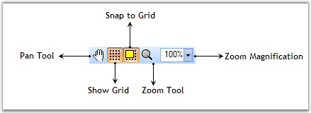
Figure 12: Pan&Zoom Tool
|
Tool Name |
Description |
Code Snippet |
|
Pan Tool |
Pan tool allows the user to drag the diagram and hence scroll it in any direction. |
diagram1.Controller.ActivateTool("PanTool"); |
|
Zoom Tool |
Zoom tool allows the user to zoom the diagram with minimum and maximum magnification. |
diagram1.Controller.ActivateTool("ZoomTool"); |
|
Magnification |
This value is used to zoom the view in and out. The x and y axes can be scaled independently. Normally, the x and y axes will have the same magnification value. |
int magVal = 30; diagram1.View.Magnification= magVal; |
|
ShowGrid |
This will show / hide the diagram view grid. |
Diagram1.View.Grid.Visible = true; |
|
SnapToGrid |
Specifies whether the snap to grid feature is enabled. |
Diagram1.View.Grid.SnapToGrid =true; |
|
Rulers |
Diagram control supports rulers similar to that in Microsoft Word. For details see Rulers |
Diagram1.ShowRulers=true; |
Alignment Tool
The following screen shot illustrates the Alignment tools.
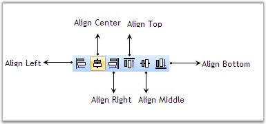
Figure 13: Alignment Tool
|
Tool Name |
Description |
Code Snippet |
|
AlignLeft |
Aligns the selected nodes along the left edge of the first node. |
diagram1.AlignLeft(); |
|
AlignCenter |
Aligns the selected nodes along the vertical center of the first node. |
diagram1.AlignCenter(); |
|
AlignRight |
Aligns the selected nodes along the right edge of the first node. |
diagram1.AlignRight(); |
|
AlignTop |
Aligns the selected nodes along the top edge of the first node. |
diagram1.AlignTop(); |
|
AlignMiddle |
Aligns the selected nodes along the horizontal center of the first node. |
diagram1.AlignMiddle(); |
|
AlignBottom |
Aligns the selected nodes along the bottom edge of the first node. |
diagram1.AlignBottom(); |
Rotate Tool
The following screen shot illustrates the Rotate tools.
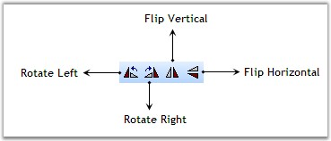
Figure 14: Rotate Tools
|
Tool Name |
Description |
Code Snippet |
|
RotateLeft |
Rotates the selected nodes about their local origin by -90 degrees. |
diagram1.Rotate(-90); |
|
RotateRight |
Rotates the selected nodes about their local origin by 90 degrees. |
diagram1.Rotate(90); |
|
FlipVertical |
Flips the selected nodes about their vertical (Y) axis. |
diagram1.FlipVertical(); |
|
FlipHorizontal |
Flips the selected nodes about their horizontal (X) axis. |
diagram1.FlipHorizontal(); |
Resize Tool
The following screen shot illustrates the Resize tools.
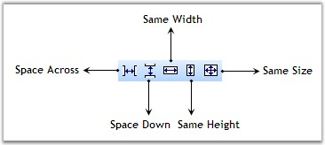
Figure 15: Resize Tools
|
Tool Name |
Description |
Code Snippet |
|
SpaceAcross |
Positions the selected nodes for equal horizontal spacing |
diagram1.SpaceAccross(); |
|
SpaceDown |
Positions the selected nodes for equal vertical spacing |
diagram1.SpaceDown(); |
|
SameSize |
Sets the width and height of the selected nodes to be equal. |
diagram1.SameSize(); |
|
SameHeight |
Sets the height of the selected nodes to be equal. |
diagram1.SameHeight(); |
|
SameWidth |
Sets the width of the selected nodes to be equal. |
diagram1.SameWidth(); |
Nudge Tool
The following screen shot illustrates the Nudge tools.
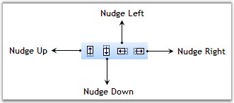
Figure 16: Nudge Tools
|
Tool Name |
Description |
Code Snippet |
|
NudgeUp |
Nudge the selected components up by Syncfusion.Windows.Forms.Diagram.Controls.Diagram.NudgeIncrement units. |
diagram1.NudgeUp(); |
|
NudgeDown |
Nudge the selected components down by Syncfusion.Windows.Forms.Diagram.Controls.Diagram.NudgeIncrement units. |
diagram1.NudgeDown(); |
|
NudgeLeft |
Nudge the selected components to the left by Syncfusion.Windows.Forms.Diagram.Controls.Diagram.NudgeIncrement units. |
diagram1.NudgeLeft(); |
|
NudgeRight |
Nudge the selected components to the right by Syncfusion.Windows.Forms.Diagram.Controls.Diagram.NudgeIncrement units. |
diagram1.NudgeRight(); |
Text Formatting Tool
The following screen shot illustrates the Text Formatting tools.
Figure 17: Text Formatting Tools
|
Tool Name |
Description |
Code Snippet |
|
Font Family |
The FamilyName property is used to get or set the font family name. |
string strFamilyName = this.comboBoxBarItemFontFamily.ListBox.SelectedItem.ToString();
if(this.diagram1.Controller.TextEditor.FamilyName != strFamilyName )this.diagram1.Controller.TextEditor.FamilyName = strFamilyName; |
|
Font Size |
Gets or sets the size of the point. |
int ptSize = 10; this.diagram1.Controller.TextEditor.PointSize = ptSize; |
|
Bold |
Gets or sets a value indicating whether the Syncfusion.Windows.Forms.Diagram.TextEditor is bold. |
bool newValue = !( this.diagram1.Controller.TextEditor.Bold ); this.diagram1.Controller.TextEditor.Bold = newValue; |
|
Italic |
Gets or sets a value indicating whether the Syncfusion.Windows.Forms.Diagram.TextEditor is italic. |
bool newValue = !( this.diagram1.Controller.TextEditor.Italic ); this.diagram1.Controller.TextEditor.Italic = newValue; |
|
Underline |
Gets or sets a value indicating whether the Syncfusion.Windows.Forms.Diagram.TextEditor is underline. |
bool newValue = !( this.diagram1.Controller.TextEditor.Underline ); this.diagram1.Controller.TextEditor.Underline = newValue; |
|
StrikeOut |
Gets or sets a value indicating whether the Syncfusion.Windows.Forms.Diagram.TextEditor is strikeout. |
bool newValue = !( this.diagram1.Controller.TextEditor.Strikeout ); this.diagram1.Controller.TextEditor.Strikeout = newValue; |
|
TextColor |
Gets or sets the color of the text. |
ColorDialog dlg = new ColorDialog( ); dlg.Color this.diagram1.Controller.TextEditor.TextColor; if ( dlg.ShowDialog( this ) == DialogResult.OK ) { this.diagram1.Controller.TextEditor.TextColor = dlg.Color; } |
|
Align Text Left |
Gets or sets the horizontal alignment to Near. |
this.diagram1.Controller.TextEditor.HorizontalAlignment = StringAlignment.Near; |
|
Align Text Right |
Gets or sets the horizontal alignment to Far. |
this.diagram1.Controller.TextEditor.HorizontalAlignment= StringAlignment.Far; |
|
Align Text Center |
Gets or sets the horizontal alignment to Center |
this.diagram1.Controller.TextEditor.HorizontalAlignment = StringAlignment.Center; |
|
Subscript |
Gets or sets a value indicating whether the Syncfusion.Windows.Forms.Diagram.TextEditor is subscript. |
bool newValue = !( this.diagram1.Controller.TextEditor.Subscript ); this.diagram1.Controller.TextEditor.Subscript = newValue; |
|
Superscript |
Gets or sets a value indicating whether the Syncfusion.Windows.Forms.Diagram.TextEditor is superscript. |
bool nValue = !( this.diagramComponent.Controller.TextEditor.Superscript ); this.diagramComponent.Controller.TextEditor.Superscript = newValue; |
|
Lower Text |
Decreases the char offset value. |
int nCurrentOffset = this.diagramComponent.Controller.TextEditor.CharOffset; nCurrentOffset--; this.diagram1.Controller.TextEditor.CharOffset = nCurrentOffset; |
|
Upper Text |
Increases the char offset value. |
int nCurrentOffset = this.diagram1.Controller.TextEditor.CharOffset; nCurrentOffset++; this.diagram1.Controller.TextEditor.CharOffset = nCurrentOffset; |
Group & Order Tool
The following screen shot illustrates the Group and Order tools.
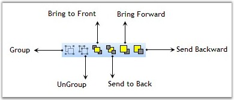
Figure 18: Group & Order Tools
|
Tool Name |
Description |
Code Snippet |
|
Group |
Groups the currently selected nodes in a diagram Group. |
diagram1.Controller.Group(); |
|
UnGroup |
Ungroups the currently selected group in a diagram. |
diagram1.Controller.UnGroup(); |
|
BringToFront |
Brings the selected nodes to the front of the Z-order. |
diagram1.Controller.BringToFront(); |
|
SendToBack |
Sends the selected nodes to the back of the Z-order. |
diagram1.Controller.SendToBack(); |
|
BringForward |
Brings the selected nodes forward in the Z-order. |
Diagram1.Controller.BringForward(); |
|
SendBackward |
Sends the selected nodes backward in the Z-order. |
Diagram1.Controller.SendBackward(); |
Drawing Tools
The following screen shot illustrates the drawing tools.
Figure 19: Drawing Tools
|
Tool Name |
Description |
Code Snippet |
|
SelectTool |
Specifies the selection mode. |
diagram1.Controller.ActivateTool("SelectTool"); |
|
LineTool |
Draws straight line with start and end point. |
diagram1.Controller.ActivateTool("LineTool"); |
|
PolyLineTool |
Interactive tool for drawing polylines. |
diagram1.Controller.ActivateTool("PolyLineTool"); |
|
RectangleTool |
Interactive tool for drawing rectangles. |
diagram1.Controller.ActivateTool("RectangleTool"); |
|
RectangleTool |
Interactive tool for drawing rounded rectangles. |
diagram1.Controller.ActivateTool("RectangleTool"); |
|
EllipseTool |
Interactive tool for drawing ellipses. |
diagram1.Controller.ActivateTool("EllipseTool"); |
|
PolygonTool |
Interactive tool for drawing polygons. |
diagram1.Controller.ActivateTool("PolygonTool"); |
|
CurveTool |
Interactive tool for drawing curves. |
diagram1.Controller.ActivateTool("CurveTool"); |
|
ClosedCurveTool |
Interactive tool for drawing closed curves. |
diagram1.Controller.ActivateTool("ClosedCurveTool"); |
|
PencilTool |
Draws the user defined shape similar to Microsoft Paint. |
diagram1.Controller.ActivateTool("PencilTool"); |
|
SplineTool |
Interactive tool for drawing spline. |
diagram1.Controller.ActivateTool("SplineTool"); |
|
BezierTool |
Interactive tool for drawing bezier. |
diagram1.Controller.ActivateTool("BezierTool"); |
|
TextTool |
Interactive tool for inserting text nodes into a diagram and editing existing text nodes. This tool manages the insertion of new text nodes into a diagram and editing existing ones. Activating this tool causes it to track mouse-down, mouse-move, and mouse-up events and draw a tracking rectangle.
The rectangle drawn is used as the bounds of a new text node, which is inserted into the diagram using an InsertNodesCmd.
This tool also listens to the double-click events. If the user double-clicks a text node, this tool opens a text editor allowing the user to edit the text. |
diagram1.Controller.ActivateTool("TextTool"); |
|
RichTextTool |
Interactive tool for inserting and editing rich text objects.
This tool manages the insertion of new rich text nodes into a diagram and editing of existing rich text nodes. Activating this tool causes it to track mouse-down, mouse-move, and mouse-up events and draw a tracking rectangle.
The rectangle drawn is used as the bounds of a new rich text node, which is inserted into the diagram using an InsertNodesCmd command.
This tool also listens to the double-click events. If the user double-clicks a rich text node, this tool opens a text editor allowing the user to edit the text. |
diagram1.Controller.ActivateTool("RichTextTool"); |
|
BitmapTool |
Interactive tool for inserting bitmaps into a diagram. |
diagram1.Controller.ActivateTool("BitmapTool"); |
|
ConnectionPointTool |
The connection point tool is an interactive tool for inserting and deleting connection points on diagram nodes. You can insert a connection point by clicking the node and delete a connection point by holding CTRL and clicking the node. |
diagram1.Controller.ActivateTool("ConnectionPointTool"); |
Diagram Connector Tools
The following screen shot illustrates the Diagram Connector tools.
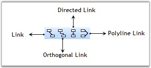
Figure 20: Diagram Connector Tools
LineConnectorTool
Line Connector Tool is used to connect nodes in a straight line. It creates line shape nodes. The name of the LineConnectorTool is LineLinkTool.
The below table lists the properties of the tool.
|
Property |
Description |
|
HeadDecorator |
Sets the Head Decorator applied to the created node. |
|
TailDecorator |
Sets the Tail Decorator applied to the created node. |
|
InAction |
Sets the distance from the start of the line to the dash pattern. It accepts Float value. |
|
Name |
Sets the Name for the Tool. |
|
Preceding Tool |
Gets the Preceding Tool. |
|
[C#]
diagram1.Controller.ActivateTool("LineLinkTool");
Tool t = diagram1.Controller.ActiveTool; if (t is Syncfusion.Windows.Forms.Diagram.LineConnectorTool) { LineConnectorTool l = (LineConnectorTool)t; l.HeadDecorator.DecoratorShape = DecoratorShape.Filled45Arrow; l.TailDecorator.DecoratorShape = DecoratorShape.Filled45Arrow; } |
Orthogonal Connector Tool
Orthogonal Connector Tool is used to connect nodes in an orthogonal manner by providing its start point and end point. It creates the Orthogonal Line Shape node. The name of the Orthogonal Connector Tool is OrthogonalLinkTool. The below table lists the properties of the tool.
|
Property |
Description |
|
HeadDecorator |
Sets the Head Decorator applied to the created node. |
|
TailDecorator |
Sets the Tail Decorator applied to the created node. |
|
InAction |
Sets the distance from the start of the line to the dash pattern. It accepts Float value. |
|
Name |
Sets the Name for the Tool. |
|
Preceding Tool |
Gets the Preceding Tool. |
|
[C#]
diagram1.Controller.ActivateTool("OrthogonalLinkTool"); Tool t = diagram1.Controller.ActiveTool; if (t is Syncfusion.Windows.Forms.Diagram.OrthogonalConnectorTool) { OrthogonalConnectorTool l = (OrthogonalConnectorTool)t; l.HeadDecorator.DecoratorShape = DecoratorShape.Filled45Arrow; l.TailDecorator.DecoratorShape = DecoratorShape.Filled45Arrow; } |
DirectedLineConnector Tool
DirectedLineConnector Tool is used to connect the nodes in a directed line. It creates the directed line shape node. The name of the DirectedLineConnectorTool is DirectedLineLinkTool. The below table lists the properties of the tool.
|
Property |
Description |
|
HeadDecorator |
Sets the Head Decorator applied to the created node. |
|
TailDecorator |
Sets the Tail Decorator applied to the created node. |
|
InAction |
Sets the distance from the start of the line to the dash pattern. It accepts Float value. |
|
Name |
Sets the Name for the Tool. |
|
Preceding Tool |
Gets the Preceding Tool. |
|
[C#]
diagram1.Controller.ActivateTool("DirectedLineLinkTool"); Tool t = diagram1.Controller.ActiveTool; if (t is Syncfusion.Windows.Forms.Diagram.DirectedLineConnectorTool) { DirectedLineConnectorTool l = (DirectedLineConnectorTool)t; l.HeadDecorator.DecoratorShape = DecoratorShape.Filled45Arrow; l.TailDecorator.DecoratorShape = DecoratorShape.Filled45Arrow; } |
PolyLineConnector Tool
This is an interactive tool for drawing Polyline Connector. The name of the tool is "PolyLineLinkTool". The below table lists the properties of the PolyLine tool.
|
Property |
Description |
|
HeadDecorator |
Sets the Head Decorator applied to the created node. |
|
TailDecorator |
Sets the Tail Decorator applied to the created node. |
|
InAction |
Sets the distance from the start of the line to the dash pattern. It accepts Float value. |
|
Name |
Sets the Name for the Tool. |
|
Preceding Tool |
Gets the Preceding Tool. |
|
[C#]
diagram1.Controller.ActivateTool("PolyLineLinkTool"); Tool t = diagram1.Controller.ActiveTool; if (t is Syncfusion.Windows.Forms.Diagram.PolyLineConnectorTool) { PolyLineConnectorTool l = (PolyLineConnectorTool)t; l.HeadDecorator.DecoratorShape = DecoratorShape.Filled45Arrow; l.TailDecorator.DecoratorShape = DecoratorShape.Filled45Arrow; } |
Creating a Diagram using Diagram Builder
To create your own diagram in the diagram builder, follow the below given procedure.
1. Go to the File menu and click New. The new window is displayed as in the following screen shot.
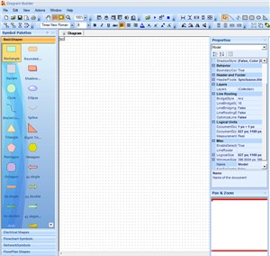
Figure 21: Diagram Builder
2. To add symbols into the symbol palette, select Add SymbolPalette in the File menu.
3. Select the symbol palette, which you created previously using symbol designer from the list of Symbol Palettes displayed.
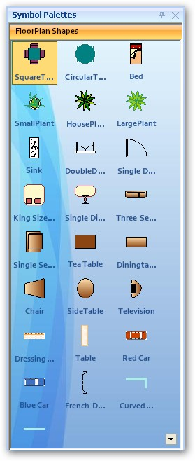
Figure 22: Symbol Palette
4. On placing the symbol into the diagram area, the Diagram Builder displays a dialog for adding the symbol palette into the Associated Palettes. To add, click OK. Click Cancel if not required.
5. Place the symbols and change their properties according to the requirements. Finally save the file with .edd extension.
A diagram is created using the Diagram Builder. You can use this diagram (.edd) file for developing your application.
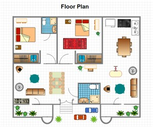
Figure 23: Sample Diagram